Getting married in Bordeaux
Bordeaux is world-famous for its unique heritage, and some couples choose to marry here to make the most of the city on the most beautiful day of their life. So let's explore the ideas to follow for a successful typical Bordeaux wedding for couples from abroad!
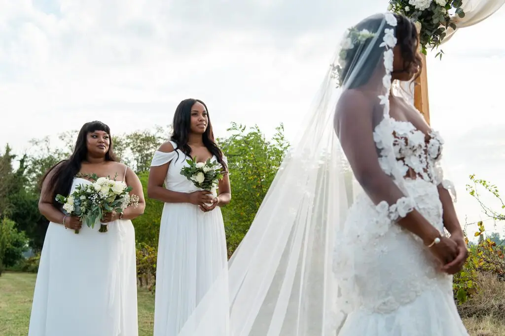
If you are foreign nationals, note that there are various conditions to meet before you can have a civil wedding in France, and so in Bordeaux. I invite you to check the French Ministry of the Interior's website to review your options! Otherwise, you can have a religious wedding, celebrate a symbolic ceremony or hold your wedding reception in the beautiful Bordeaux region. Don't miss out on the wonders the city has to offer on your wedding day!
City of wine and canelés, crossed by the Garonne river, there is so much to discover! So here are a few ideas for your typically Bordelais wedding. First, for your reception venue in Bordeaux, you can't ignore the many châteaux and wine estates around the city, for a romantic, regal wedding surrounded by vines. In the city centre, you'll find many spaces to celebrate your union in buildings with classic Bordeaux architecture.
As for food, get ready to feast at your typically Bordelais wedding meal. The city is famous for its terroir, and close to the sea, including the much-loved Arcachon Bay, you can also enjoy oysters or duck specialities from south-west France. So many ideas to explore for a chic Bordeaux-style wedding!

As an experienced wedding planner in Bordeaux, I have organised many weddings in the region and know all its particularities. Over time, I have also built a directory of quality suppliers able to fulfil all your wishes!
So if you dream of organising a typically Bordelais wedding but don't know the region well, get in touch and we can talk it over together.
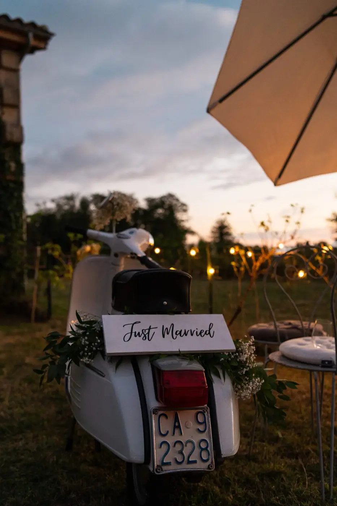
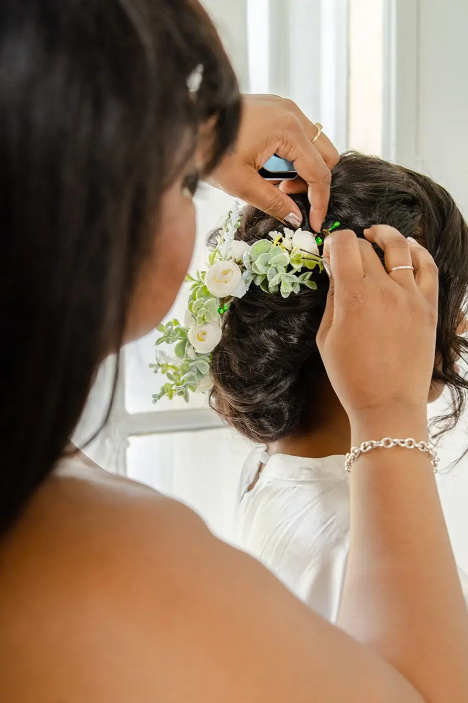

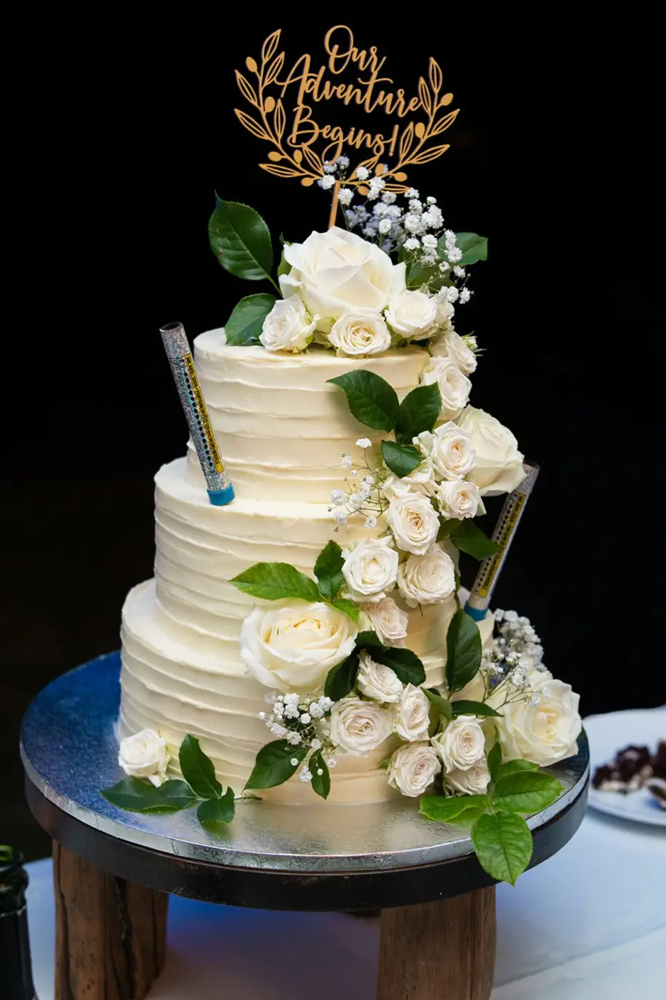
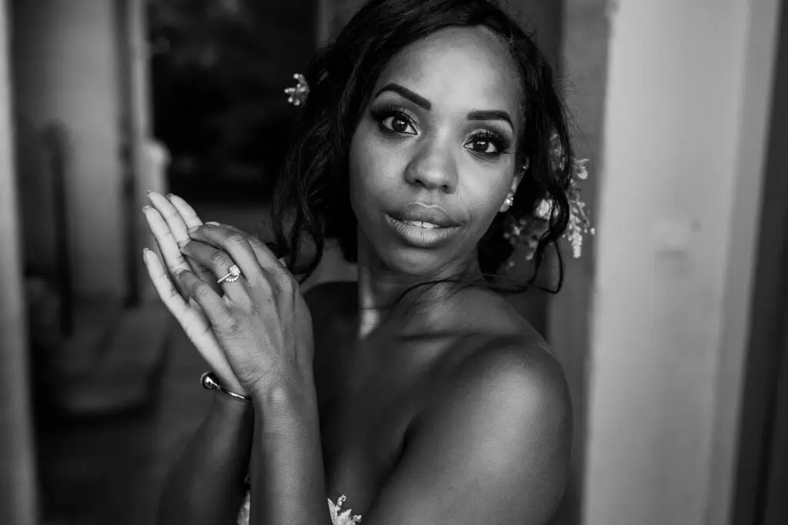
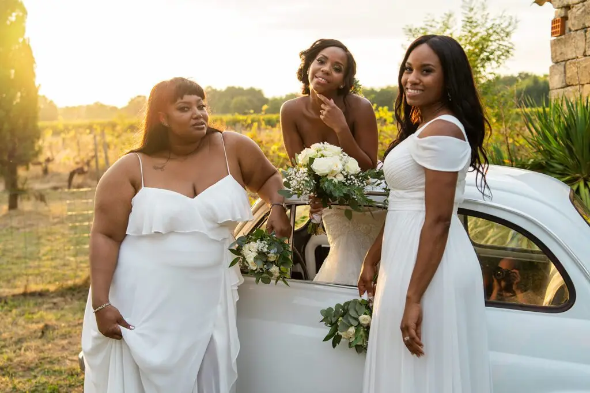


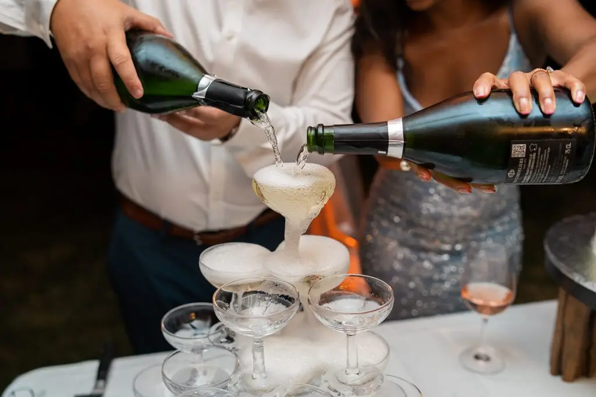

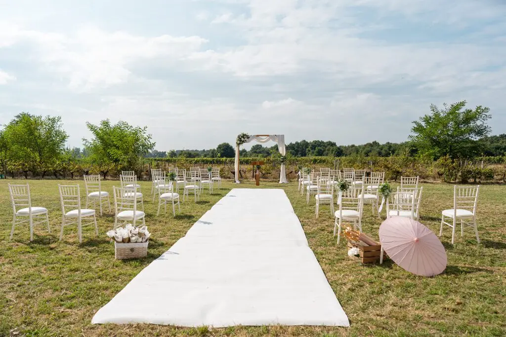
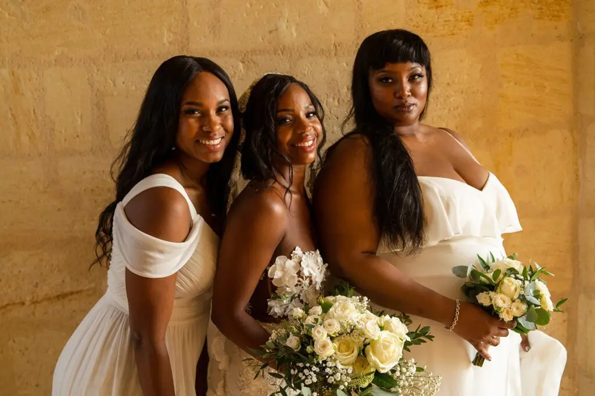
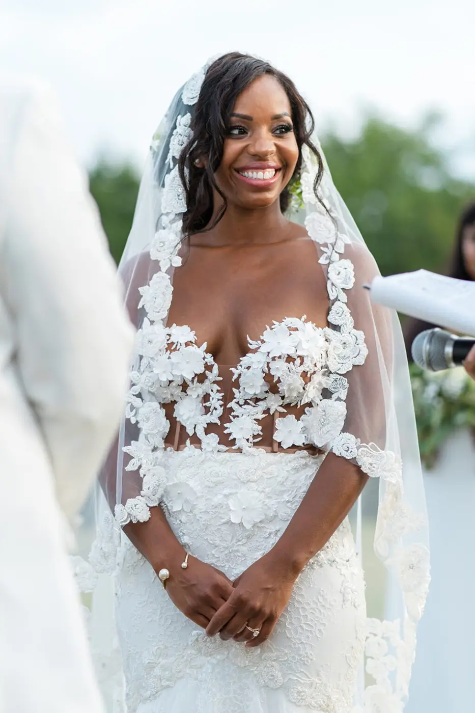
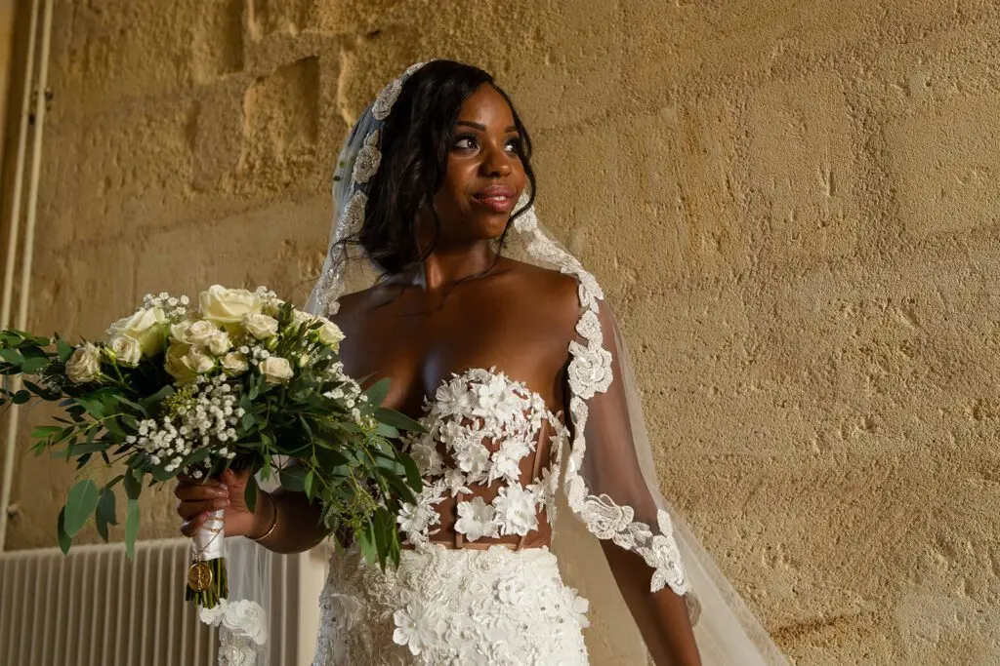
Lovely Day Event offers several services
Wedding planning
I step in at every stage of your preparations and guide you through your choices, bringing ideas and suggestions so that your wedding looks like no one but you.
Wedding design
Creative and passionate, I am a certified Wedding Designer and I create a scenographic atmosphere that matches the theme of your wedding.
On-the-day coordination
I will be the conductor of your day, managing the suppliers, the set-up of your decor and the smooth running of this beautiful day.